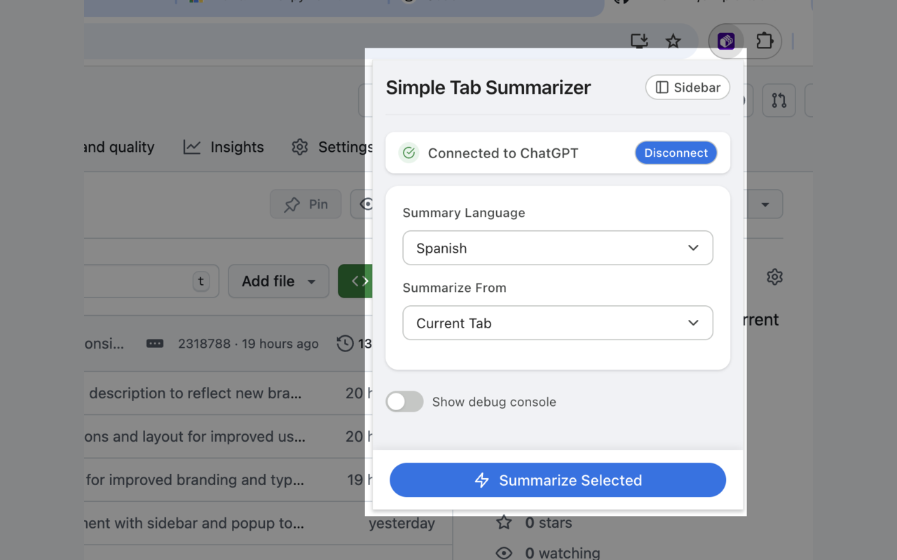
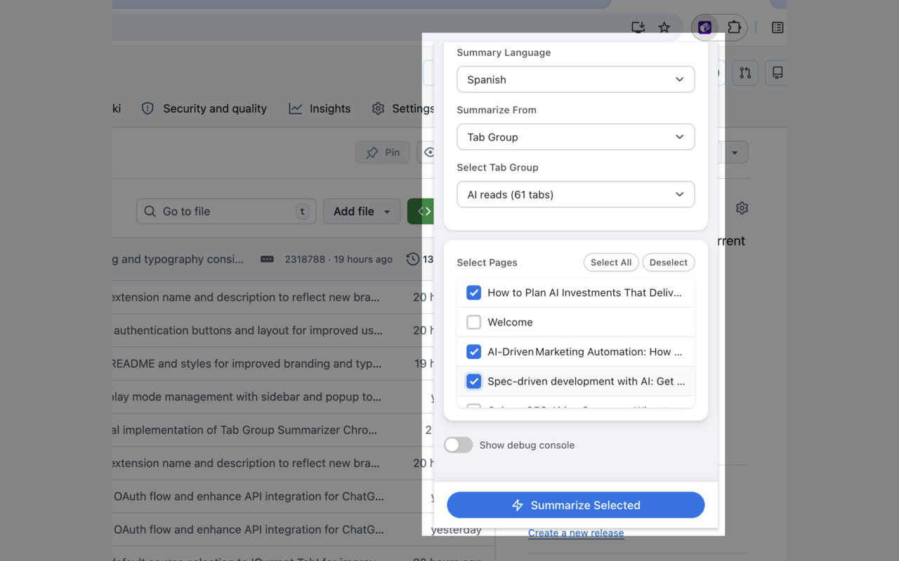
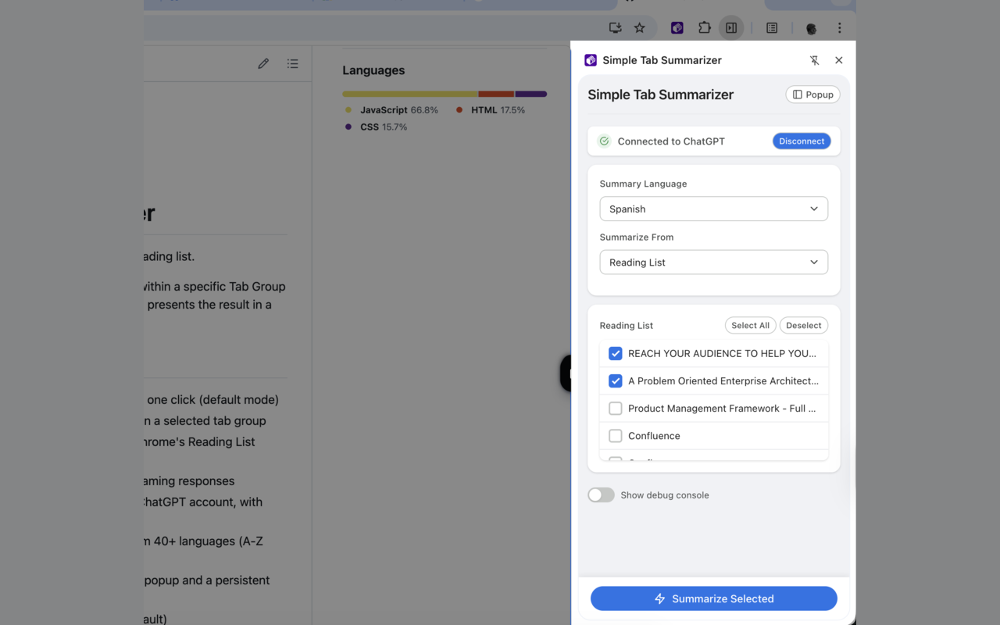

Private, on-device AI summaries for Chrome
Summarize the current tab, a whole tab group, or your reading list — using Chrome's built-in AI (Gemini Nano), running entirely on your device. No sign-up, no API key, and nothing leaves your machine by default.
Privacy first, by design
By default, the extension summarizes using Chrome's built-in AI (Gemini Nano), which runs entirely on your device. The text of the pages you summarize never leaves your machine.
If you need to summarize in a language the built-in model doesn't yet support (roughly 35 additional languages), you can optionally sign in to ChatGPT — that content is then sent to OpenAI only for those summaries. If you stick to the built-in languages (English, Japanese, Spanish, German, French), no account is ever required.
Read the full privacy policy.
What it does
One-click summaries for however you browse.
Current tab
Summarize the page you're on with a single click.
Tab groups
Select and summarize an entire tab group at once, with live auto-refresh as tabs change.
Reading list
Summarize pages you've saved to Chrome's Reading List without opening each one.
On-device AI
Uses Chrome's Summarizer API (Gemini Nano) on Chrome 138+. Private, offline-capable, free.
Optional ChatGPT fallback
Sign in only if you need a language the built-in model doesn't yet support.
Popup or sidebar
Compact popup or persistent side panel — both share the same session state.
Configurable verbosity
Short, Medium, or Detailed summaries to match how much time you have.
40+ languages
5 handled on-device by built-in AI; the rest via the optional ChatGPT fallback.
See it in action
Popup mode, tab-group summaries, and the persistent sidebar.


